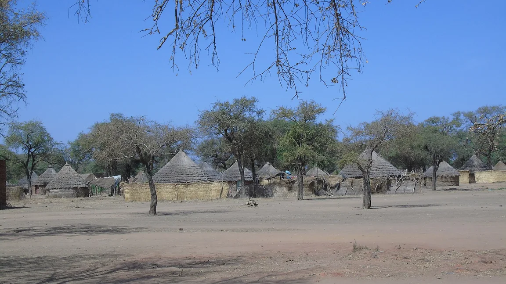
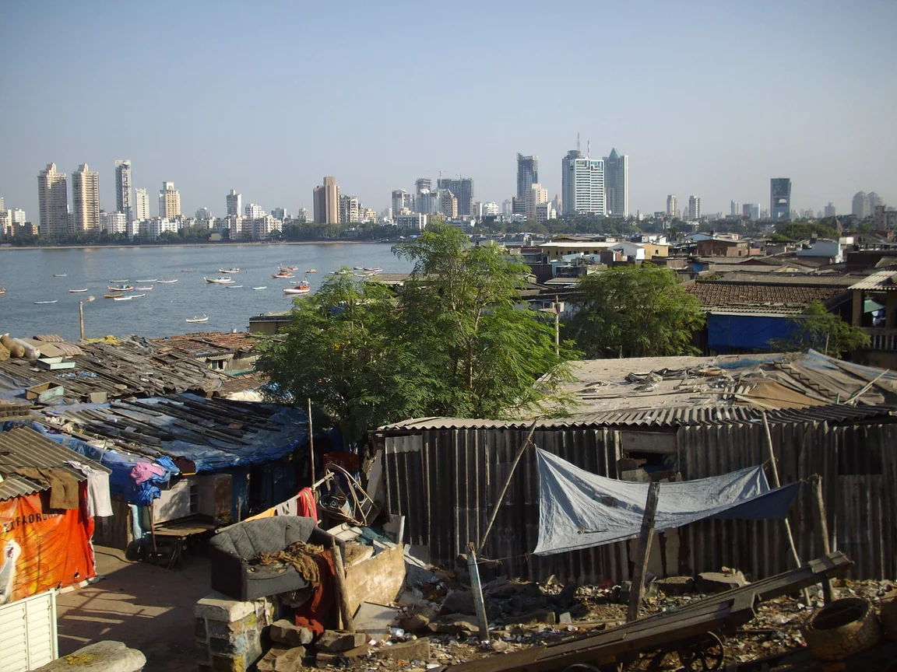
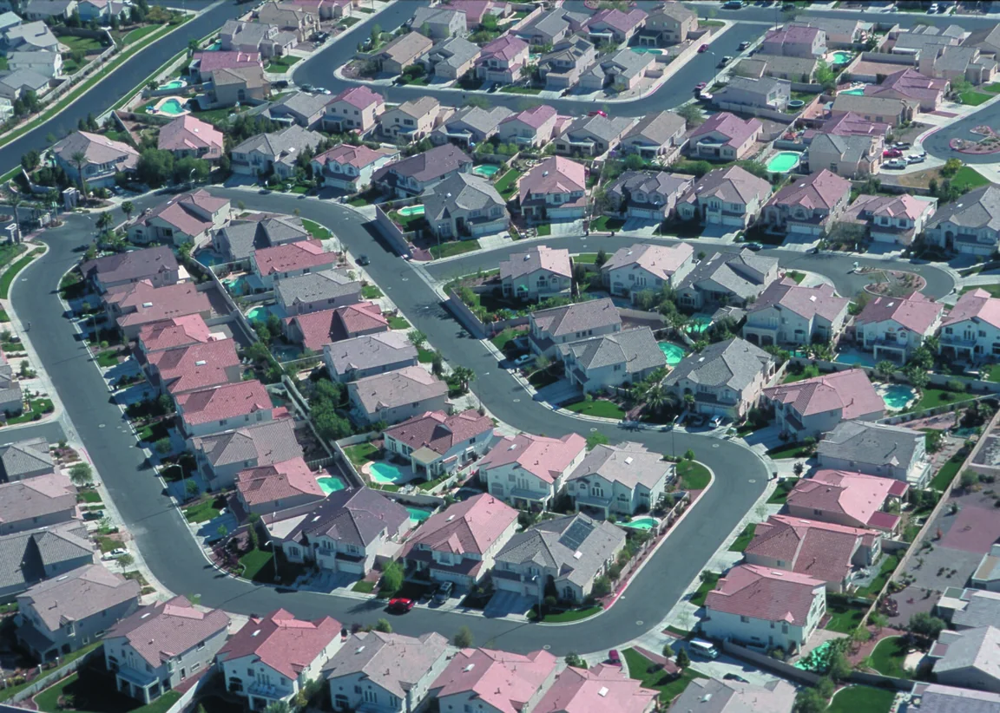
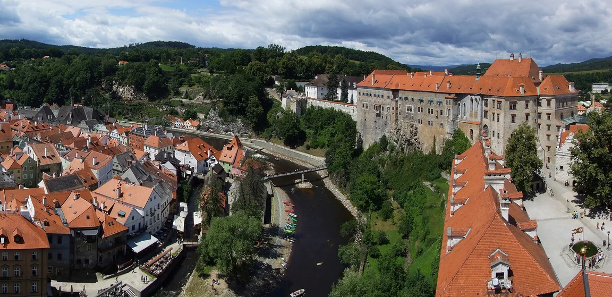

Přirozený přírůstek
Narození − zemřelí. Je-li kladný, obyvatel přibývá. Nejrychleji dnes roste subsaharská Afrika; v Evropě se rodí méně dětí a obyvatelstvo stárne.
Pro 9. ročník: rozmístění obyvatel, růst populace, migrace a města.
Podle OSN žilo na Zemi v roce 2024 přes 8 miliard lidí. Rozmístěni jsou velmi nerovnoměrně: nejvíc jich žije v jižní a východní Asii, v nížinách u řek a na pobřeží. Pouště, polární oblasti a vysoké hory jsou téměř prázdné – chybí voda, teplo nebo úrodná půda.
Narození − zemřelí. Je-li kladný, obyvatel přibývá. Nejrychleji dnes roste subsaharská Afrika; v Evropě se rodí méně dětí a obyvatelstvo stárne.
Graf počtu lidí podle věku. Široký základ = hodně dětí (rozvojová země). Úzký základ a širší horní část = málo dětí, hodně seniorů (vyspělá země).
Stěhování lidí. Emigrace = vystěhování ze země, imigrace = přistěhování. Pracovní migrant hledá lepší práci; uprchlík utíká před válkou nebo pronásledováním.
Stále víc lidí žije ve městech – to je urbanizace. Velké město srostlé s okolními sídly tvoří aglomeraci. Když lidé z venkova přicházejí rychleji, než se stihne postavit bydlení, vznikají na okrajích slumy. Ve vyspělých zemích se naopak lidé stěhují z center na předměstí (suburbanizace).
Typická chyba: zaměnit počet obyvatel a hustotu zalidnění. Hustota je počet obyvatel na 1 km² – velký stát může mít hodně lidí, a přesto malou hustotu.
Věková pyramida má velmi široký základ a směrem nahoru se rychle zužuje do úzké špičky. Jakou zemi spíš popisuje – rozvojovou, nebo vyspělou?
✅ Pyramida popisuje rozvojovou zemi s rychle rostoucí, mladou populací.
Na Zemi žije přes 8 miliard lidí (OSN, 2024), ale rozmístěni jsou velmi nerovnoměrně – nejhustěji je osídlena jižní a východní Asie. Roste podíl lidí žijících ve městech (urbanizace) a zvyšuje se počet aglomerací nad 10 milionů obyvatel.
Čtyři sídla, čtyři způsoby života. Všímej si stavebního materiálu, hustoty zástavby a toho, kolik místa připadá na jednoho člověka.



